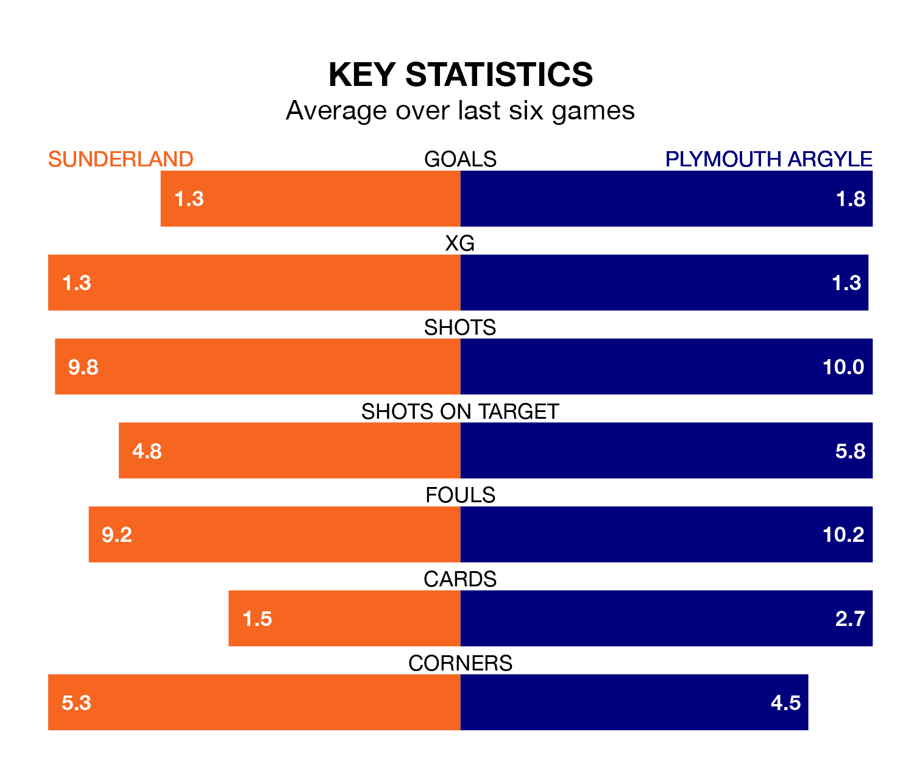

Sunderland are heavy favourites to keep all three points at home in Saturday's kick-off against Plymouth Argyle.
The Black Cats, who sit eighth in EFL Championship with 30 games played, are priced at 1.6 to seal victory at the Stadium of Light.
Sitting seven places and eight points behind them in the table, Plymouth are 5.0 to win with *Betting Company*, while the draw is at 4.2.
In Morgan Whittaker, Plymouth have the league's sharpest shooter so far this season. He has notched 16 goals in 29 appearances.
His goal rate of one every 155 minutes is quicker than that of Jack Clarke, Sunderland's top scorer with a goal every 205 minutes, and a total of 13 goals in 30 games.
With 48 goals in 29 games so far this season, Argyle are scoring more than average in the league with 1.7 goals per game. But they are conceding more than average too, letting in 47 goals at a rate of 1.6 per game.
The Black Cats, meanwhile, are average scorers, with 1.4 goals per game. They have conceded 1.1 goals per game.
In the last 10 years, Sunderland and Plymouth have played each other on seven occasions. Sunderland won four of them, Plymouth two, and they drew once.
On average, the Black Cats scored 1.4 goals and the Pilgrims 0.9 in those matches.
Their last meeting was on November 25, when Plymouth won 2-0 at home.
The home side are in mixed form in EFL Championship, with two wins and two draws from their last six games.
With two wins and three draws over that period, the Pilgrims' form is slightly better – they have taken nine points from 18, compared to Sunderland's eight.
Sunderland's last match was on Sunday, a 1-1 draw against Middlesbrough, with Nazariy Rusyn getting the goal for the Black Cats.
Plymouth beat Swansea City 1-0 last time out, on February 3, with Whittaker on the scoresheet.
Updated: 10:01 (UTC), 06/02/24